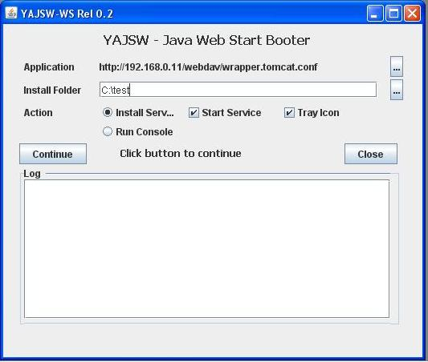
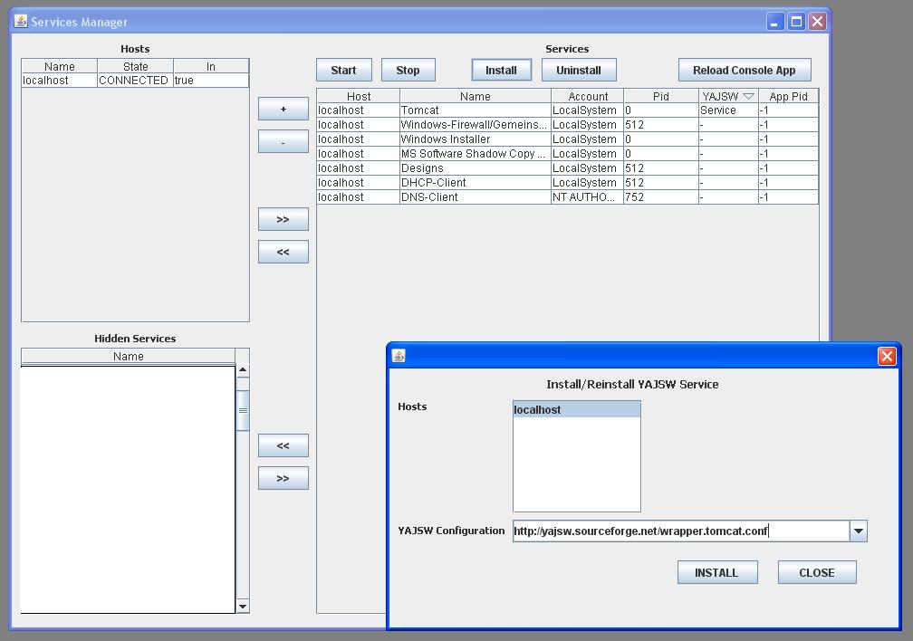

Welcome to YAJSW
Yet Another Java Service Wrapper- Welcome
to YAJSW
-
- Introduction
- Project information
- Changes
- Comparison of wrapper frameworks
- Requirements & Supported Platforms
- Licensing
- Features
- Quick Start
- Migrating from JSW
- Configuration
- Configuration Generator
- Java Application Launching
- Using YAJSW from within a java application
- Starting a native image
- Starting a java application
- Reading the output stream of a wrapped application
- Writing the input stream of a wrapped application
- Restarting/Stopping the JVM from within a wrapped application
- Getting a Thread Dump of the wrapped application
- Installing a service
- Starting a service
- Stopping a service
- Listening to state change
- Monitoring java applications
- Timers and Conditions
- JMX Support
- System Tray Support
- Windows services
- Unix/Linux Daemon
- Mac OS X Daemon
- Scripts
- MSCS Cluster Aware Wrapper
- Windows Session0 Isolation
- OS Users
- Entering passwords
- YAJSW lib folder
- Temporary files
- Wrapper process java options
- Wrapping groovy scripts
- YAJSW groovified: WrapperBuilder
- Building YAJSW
- Network Launching of Applications - Experimental
- Wrapping JNLP - Experimental
- Java Web Start Support - Experimental - Currently only for windows
- Services Manager - Experimental - Currently only for windows
- Android Services Manager - experimental
- Service Update - Experimental - Currently windows only
- Third party Libraries
-
Introduction
YAJSW is a java centric implementation of the java service wrapper by tanuki (JSW).It aims at being mostly configuration compliant with the original. It should therefore be easy to switch from JSW to YAJSW.
JSW is a wonderful software I have been using for some time in production. So why yet another framework ?
The main reason is that I need a better integration within my java job scheduling framework (rzomx)
As of the next version the license of JSW will change making it impossible for me to use it in rzomx
I may need win64 support, which is currently not available or not free for JSW.
Project information
YAJSW project is managed on sourceforgePlease refer to the project page for licensing, user forums, bug tracking, file downloads.
Currently the project does not support mailing lists nor does it support a source code repository. The source is included in the download file.
Changes
Comparison of wrapper frameworks
- YAJSW : Yet Another Java Service Wrapper
- JSW : Java Service Wrapper
- ACD : Apache Commons Daemon
- L4J : Launch4j
| Features/Framework | YAJSW | JSW | ACD | L4J |
| License | APACHE/LGPL | GPL/Commercial | Apache | BSD/MIT |
| Run as Windows Service | X | X | X | |
| Run as UNIX Daemon | X | X | X | |
| Support Mac OS X launchd | X | |||
| Platform indepemdent installation of services/Daemons | X | |||
| Java Embedable | X | |||
| Wrap Java Application | X | X | X | X |
| Wrap Groovy Script | X | |||
| Wrap native executable | X | X | ||
| Wrap as executable | X | |||
| Portable Configuration | X | X | ||
| Capture and Log console output | X | X | ||
| Stop and Reconnect Wrapper | X | |||
| Monitor Application | X | X | X | |
| Restart Application | X | X | X | |
| Single Instance Enforcement | X | X | X | |
| Control Process Priority | X | X | ||
| Control Process Affinity | X | |||
| Alert Emails | X | X (Commercial) | ||
| Scripting | X | |||
| Timed Events and Event commands | X | X (Commercial) | ||
| Configuration generator | X | |||
| Define Process Name | X | X | ||
| Automatic selection of JVM | X | X | ||
| JMX Support | X | X | ||
| System Tray + GUI Console | X | |||
| Windows Cluster Aware | X | |||
| Network launcher | X | |||
| Support JNLP configuration | X | |||
| Java Webstart launcher | X |
Requirements & Supported Platforms
YAJSW requires Java 1.6 or higher.The current release is stable for win32 and win64
Tested on: Windows XP
prof, Windows 2000 server, Windows 2003 32 & 64 bit
server, Windows 2008 32 & 64 bit, Windows 7 32 & 64 bit,
Windows Vista, Windows 8, Windows server 2012, Windows 10, Windows
server 2016
The current release is stable for Linux.
Tested on Suse 9, Suse
11.1 x86 and amd64, Ubuntu 9.04 32 & 64 bit, Ubuntu 10.4 32 & 64 bit, Ubuntu 12.04, CentOs 6 & 7
The current release is stable for Mac OS X
Tested on 10.5.5
The current release is alpha for Solaris
Tested on Solaris 10 u6 x86
The current release is alpha for FreeBSD
Tested on FreeBSD 7.1 x86
and amd64
The current release is stable for Raspberry pi
Tested on Linux raspberrypi 3.18.7+
Goal of YAJSW is to support all platforms as JNA.
It should be easy to build it for other platforms supporting libffi
If you have tested it, or ported it on other platforms please notify me.
NOTE Windows vista, 7, etc: the batch files have to be run as administrator.
NOTE: JBoss 7: runs only with java version prior to 6_17 or higher than 7_0. Jboss seems to be aware of this issue.
NOTE: It is recommended to run the wrapper with java 7.
NOTE: If you are having issues displaying the system tray icon on ubuntu unity
NOTE: as of release 12.02 java 1.6 is required
NOTE: raspberry pi: after invocation of installDaemon.sh: execute: "sudo update-rc.d <daemon name> defaults", otherwise the service is not started automatically on boot.
Licensing
Prior to release 12.00: LGPL
As of release 12.00 the following licenses apply:
Apache V2.0
Except for the following modules which are released with the LGPL license:
- service manager: due to the license of glazed lists which is not compatible with APACHE
- mail script: due to license of javaMail which is not compatible with APACHE
Features
- Wrap any native executable, java process or groovy script and run it as windows service or linux daemon
- Easy Platform Independent installation of services/daemons
- Platform independent configuration
- Support for platform specific configuration
- Wild card for classpath directories and files
- Capture console output, log it, trigger scripts or restart process on output matching regular expressions
- Monitor and automatically restart hanging or crashed proceses
- Trigger process execution and termination at specific cycles, times or scriptable conditions
- Embed the wrapper within java applications
- Read from process output or write to process input
- Support for RunAs / sudo
- Support for System Tray Icon. Display tray messages from a groovy script, for example in case of exceptions. Monitoring Console.
- Support for generation of configuration file
- Windows Cluster aware
- Support for remote network launching
- Support for jnlp configuration
- Windows Session0 support
- License: APACHE
Quick Start
Screencast
Installation of a java application using genConfig
Note: In the sequel script
file names end with ".bat". For Linux please use the corresponding
files which end with ".sh"
- download YAJSW
- Unpack the zip file to a folder <yajsw>.
- Do not remove or copy files from this folder to any another folder. Do not rename any folders within <yajsw>. For this you may have to change the manifest in the jar files.
- Call java -version and make sure that your default java installation is 1.5 or higher
- If this is not the case make sure that java 1.5 or higher is installed and adapt the environment variable java_exe in bat/setenv.bat or setenv.sh. NOTE: to display system tray java 1.6 is required. For thread dump with locks java 1.6 is required.
- Start the application you would like to wrap. For example start Tomcat. Check the process id of your application. NOTE: we need the pid of the application not the batch file which started the application. You may use bat/runHelloWorld.bat, which starts a java application which prints some numbers on the console.
- Goto yajsw/bat and execute
- genConfig.bat <pid>
- NOTE: on posix systems (Linux) this command requires root priviliges to access information on other processes
- This generates the file yajsw/conf/wrapper.conf which is the configuration file for wrapping your application
- Stop your application
- Open conf/wrapper.conf with a text editor and set the password for wrapper.app.password or comment out wrapper.app.account (#). Also check the value of wrapper.ntservice.name
- NOTE: you may also create a configuration file with a text editor. Use the file conf/wrapper.conf.ini as starting point.
- NOTE: Mac OS X, Solaris: wrapper.working.dir is currently not determined automatically. You may have to edit this property.
- NOTE: configuration generation is currently implemented only for java applications. It will be implemented for native image and groovy in a later release. For native images or groovy scripts you will have to create the wrapper.conf file with a text editor.
- Execute your wrapped application as console application by calling
- runConsole.bat
- check that your application (for example tomcat) is running
- To Install the application as service call
- installService.bat
- To start the service:
- startService.bat
- To stop the service:
- stopService.bat
- To uninstall the service:
- uninstallService.bat
Migrating from JSW
YAJSW configuration and command line interface are very similar to those of JSW. YAJSW however follows a diffrent architecture and therefore supports the JSW integration methods differntly. A migration guide for JSW users has therefore been implemented.
Configuration
Configuration is mostly identical to JSW.Detailed description of the YAJSWconfiguration properties is found here.
Properties can be defined in:
- wrapper.bat command line attributes
- WrappedProcess.getLocalConfiguration().setProperty()
- java system properties (example -Dwrapper.config=conf\wrapper.conf, or System.setProperty("wrapper.config", "conf\wrapper.conf") )
- in wrapper.conf file
- as operating system environment variables (example for win32: set wrapper.java=c:\java\jdk1.5\bin\java.exe)
Properties are searched in this order. Thus setting wrapper.java configuration in system properties will override the OS environment.
NOTE: In case of cascading wrapper applications, there are cases where system properties of the wrapper should not be used by the wrapped application, when starting sub processes. This can be avoided by calling WrappedProcess.setUseSystemProperties(false);
NOTE:
Do not change the configuration or scripts while the wrapper or
application or service or daemon is running. To change the
configuration first stop the
wrapper and the application.
NOTE: Before changing service/daemon configuration properties: stop and uninstall the service or daemon.
NOTE: Before changing service/daemon configuration properties: stop and uninstall the service or daemon.
Configuration Generator
Creating a wrapper configuration file can be quite a nuisance. The configuration generator helps you generate the configuration.
Given a process id (pid) the configuration generator examines the command line of a running process and automatically generates a configuration file for wrapping the given application.
Usage:
wrapper.bat -g
<pid> [-d <default
configuration file>] <output file>
NOTE: currently the configuration generator only generates configurations for java applications.
- pid: process id of the process to wrap
- <output file> : name of the output configuration file
- <default configuration file> : optional input file for defining properties such as logging, restart, scripts etc. which are not available in the command line of the current process.
NOTE: currently the configuration generator only generates configurations for java applications.
Java Application Launching
The internal workings of application launching and classloading are described here.Using YAJSW from within a java application
YAJSW may wrap applications through the shell scripts in <yajsw>/bat. These functions may also be embeded within a java application.Starting
a native image
// configuration
Map configuration = new HashMap();
configuration.put("wrapper.image", "notepad.exe"); WrappedProcess w = (WrappedProcess) WrappedProcessFactory.createProcess(configuration);
// initialiase the process w.init();
// start the process w.start();
// wait at most 10 sec or until process termination w.waitFor(10000);
// stop the process w.stop();
Map configuration = new HashMap();
configuration.put("wrapper.image", "notepad.exe"); WrappedProcess w = (WrappedProcess) WrappedProcessFactory.createProcess(configuration);
// initialiase the process w.init();
// start the process w.start();
// wait at most 10 sec or until process termination w.waitFor(10000);
// stop the process w.stop();
Starting
a java application
// global configuration
System.setProperty("wrapper.config", <conf file>); System.setProperty("wrapper.java.app.mainclass", <main class>); // system properties overwrite properties in conf file.
Map configuration = new HashMap();
WrappedProcess w = (WrappedProcess) WrappedProcessFactory.createProcess(configuration); / process specific configuration
w.getLocalConfiguration().setProperty("wrapper.app.parameter.1", "hello");
// initialiase the process w.init();
// start the process w.start(); w.waitFor(10000);
// stop the process w.stop();
System.setProperty("wrapper.config", <conf file>); System.setProperty("wrapper.java.app.mainclass", <main class>); // system properties overwrite properties in conf file.
Map configuration = new HashMap();
WrappedProcess w = (WrappedProcess) WrappedProcessFactory.createProcess(configuration); / process specific configuration
w.getLocalConfiguration().setProperty("wrapper.app.parameter.1", "hello");
// initialiase the process w.init();
// start the process w.start(); w.waitFor(10000);
// stop the process w.stop();
Reading the output stream of a wrapped application
WrappedProcess w = (WrappedProcess) WrappedProcessFactory.createProcess(new HashMap());
// process specific configuration
w.getLocalConfiguration().setProperty("wrapper.app.parameter.1", "hello");
// initialiase the process w.init();
// start the process w.start();
// a drain warps access to the output and error streams of the wrapped process. The process does not hang if the output is not consumed.
// a drain must be started and stopped
// the drain maintains a circular buffer
// if since last call to readDrainLine() no new output has been generated then "null" is returned
// if readDrainLine() is not called for a "long time" the buffer may overflow and you may "miss" some of the output
// the drain first consumes the error stream, if no output is available the output stream is consumed
w.startDrain();
System.out.println(w.readDrainLine());
w.stopDrain();
w.waitFor();
// process specific configuration
w.getLocalConfiguration().setProperty("wrapper.app.parameter.1", "hello");
// initialiase the process w.init();
// start the process w.start();
// a drain warps access to the output and error streams of the wrapped process. The process does not hang if the output is not consumed.
// a drain must be started and stopped
// the drain maintains a circular buffer
// if since last call to readDrainLine() no new output has been generated then "null" is returned
// if readDrainLine() is not called for a "long time" the buffer may overflow and you may "miss" some of the output
// the drain first consumes the error stream, if no output is available the output stream is consumed
w.startDrain();
System.out.println(w.readDrainLine());
w.stopDrain();
w.waitFor();
Writing the input stream of a wrapped application
WrappedProcess w = (WrappedProcess) WrappedProcessFactory.createProcess(new HashMap());
...
// initialiase the process w.init();
// start the process w.start();
// get a print stream to the process
PrintStream out = (PrintStream)w.getOutputStream();
// send some text to System.in of the process
out.println("my password");
...
// initialiase the process w.init();
// start the process w.start();
// get a print stream to the process
PrintStream out = (PrintStream)w.getOutputStream();
// send some text to System.in of the process
out.println("my password");
Invoking the wrapper from within a wrapped application
The static object org.rzo.yajsw.app.WrapperJVMMain.WRAPPER_MANAGER implements functions for invoking methods which are transmitted to the wrapper.
Note: you will need to add wrapperApp.jar to your compile dependency. It is not required in the run depencency.
Note: you will need to add wrapperApp.jar to your compile dependency. It is not required in the run depencency.
WRAPPER_MANAGER.restart() : request restart of the wrapped application
WRAPPER_MANAGER.stop() : request stop of the wrapped application
WRAPPER_MANAGER.signalStopping(int timeoutHint) : signal to the wrapper how long (ms) the wrapped application needs to stop. This will be generally called from within a shutdown hook.
WRAPPER_MANAGER.getProperties() : access the yajsw configuration
WRAPPER_MANAGER.getPid() : returns the pid of the wrapped application
WRAPPER_MANAGER.setShutdownListener(Runnable listener) : The listener is invoked when the wrapper sends a stop command to the wrapped application, which is before shutdown hooks are invoked.
WRAPPER_MANAGER.threadDump() : prints a thread dump to System.err
WRAPPER_MANAGER.reportServiceStartup() : indicate to the wrapper that the wrapped application is up and running. See configration property wrapper.ntservice.autoreport.startup
WRAPPER_MANAGER.stop() : request stop of the wrapped application
WRAPPER_MANAGER.signalStopping(int timeoutHint) : signal to the wrapper how long (ms) the wrapped application needs to stop. This will be generally called from within a shutdown hook.
WRAPPER_MANAGER.getProperties() : access the yajsw configuration
WRAPPER_MANAGER.getPid() : returns the pid of the wrapped application
WRAPPER_MANAGER.setShutdownListener(Runnable listener) : The listener is invoked when the wrapper sends a stop command to the wrapped application, which is before shutdown hooks are invoked.
WRAPPER_MANAGER.threadDump() : prints a thread dump to System.err
WRAPPER_MANAGER.reportServiceStartup() : indicate to the wrapper that the wrapped application is up and running. See configration property wrapper.ntservice.autoreport.startup
Getting a Thread Dump of the wrapped application
WrappedJavaProcess w = ...
w.requestThreadDump();
w.requestThreadDump();
Installing
a service
System.setPropery("wrapper.config", <conf
file>);
WrappedService w = new WrappedService();
w.init(); // read in configuration
w.install(); // start the service
WrappedService w = new WrappedService();
w.init(); // read in configuration
w.install(); // start the service
Starting
a service
WrappedService w = ...
w.init(); // read in configuration
w.start(); // run the service
w.init(); // read in configuration
w.start(); // run the service
Stopping
a service
WrappedService w = ...
w.init(); // read in configuration
w.stop(); // stop the service
w.init(); // read in configuration
w.stop(); // stop the service
Listening to state change
WrappedProcess w =...
// initialiase the process w.init();
w.addStateChangeListener(WrappedProcess.STATE_ABORT, new StateChangeListener()
{
public void stateChange(int newState, int oldState)
{
Script script = ScriptFactory.createScript("scripts/sendMail.gv", "some id", w, new String[{"toMail@test.com", "process could not be started"});
script.execute();
});
w.start();
// initialiase the process w.init();
w.addStateChangeListener(WrappedProcess.STATE_ABORT, new StateChangeListener()
{
public void stateChange(int newState, int oldState)
{
Script script = ScriptFactory.createScript("scripts/sendMail.gv", "some id", w, new String[{"toMail@test.com", "process could not be started"});
script.execute();
});
w.start();
Monitoring java applications
YAJSW implements features helping you to monitor your java
applications. Currently the following monitors have been impelemented:
- Memory
- Deadlocks
Monitoring Heap
to enable set:
If the current used heap size exceeds 90% of the maximal heap size the following message is printed to System.err:
By setting a triffer on this text one can execute actions or scripts.
Example: send an email if the used heap exceeds 90%:
wrapper.java.monitor.heap = true
wrapper.java.monitor.heap.threshold.percent = 90
wrapper.java.monitor.heap.threshold.percent = 90
If the current used heap size exceeds 90% of the maximal heap size the following message is printed to System.err:
wrapper.java.monitor.heap: HEAP SIZE
By setting a triffer on this text one can execute actions or scripts.
Example: send an email if the used heap exceeds 90%:
wrapper.java.monitor.heap.threshold.percent = 20
wrapper.filter.trigger.heap.mail=wrapper.java.monitor.heap: HEAP SIZE
wrapper.filter.script.heap.mail=scripts/sendMail.gv
wrapper.filter.script.heap.mail.args=mailto@me.com, Java low on memory set java option -Xmx to a higher value or check for memory leaks.
wrapper.filter.trigger.heap.mail=wrapper.java.monitor.heap: HEAP SIZE
wrapper.filter.script.heap.mail=scripts/sendMail.gv
wrapper.filter.script.heap.mail.args=mailto@me.com, Java low on memory set java option -Xmx to a higher value or check for memory leaks.
Monitoring Memory
to enable set:
The text "MYGC: {0\,number\,integer}\, {1\,number\,integer}\, {2\,number\,integer}" is a java MessageFormat pattern which is formatted with the following arguments: Used Heap, Minor GC Duration, Full GC Duration.
The formatted text is logged to System.err when the garbage collector has been executed.
A GC duration is 0 if it has not been executed.
You can set your own pattern and write a program which scans the log file to analyze the heap requirements of your applicaiton.
You could also use a trigger and script to write the data to a database, for later display or analysis.(see rdd4j)
wrapper.java.monitor.gc=MYGC: {0\,number\,integer}\, {1\,number\,integer}\, {2\,number\,integer}
The text "MYGC: {0\,number\,integer}\, {1\,number\,integer}\, {2\,number\,integer}" is a java MessageFormat pattern which is formatted with the following arguments: Used Heap, Minor GC Duration, Full GC Duration.
The formatted text is logged to System.err when the garbage collector has been executed.
A GC duration is 0 if it has not been executed.
You can set your own pattern and write a program which scans the log file to analyze the heap requirements of your applicaiton.
You could also use a trigger and script to write the data to a database, for later display or analysis.(see rdd4j)
Monitoring Deadlocks
to enable set:
When a deadlock is detected the following text is printed to System.err:
By setting a trigger on this text one can execute actions or scripts.
Example: Monitor for deadlocks, display a tray icon message and restart the application if a deadlock is detected:
wrapper.java.monitor.deadlock = true
When a deadlock is detected the following text is printed to System.err:
wrapper.java.monitor.deadlock: DEADLOCK IN THREADS:
A thread dump of the threads involved is also printed.By setting a trigger on this text one can execute actions or scripts.
Example: Monitor for deadlocks, display a tray icon message and restart the application if a deadlock is detected:
wrapper.java.monitor.deadlock=true
wrapper.filter.trigger.deadlock.tray=wrapper.java.monitor.deadlock: DEADLOCK IN THREADS:
wrapper.filter.script.deadlock.tray=scripts/trayMessage.gv
wrapper.filter.script.deadlock.tray.args=Deadlock Detected
wrapper.filter.trigger.deadlock.restart=wrapper.java.monitor.deadlock: DEADLOCK IN THREADS:
wrapper.filter.action.deadlock.restart=RESTART
wrapper.filter.trigger.deadlock.tray=wrapper.java.monitor.deadlock: DEADLOCK IN THREADS:
wrapper.filter.script.deadlock.tray=scripts/trayMessage.gv
wrapper.filter.script.deadlock.tray.args=Deadlock Detected
wrapper.filter.trigger.deadlock.restart=wrapper.java.monitor.deadlock: DEADLOCK IN THREADS:
wrapper.filter.action.deadlock.restart=RESTART
Timers and Conditions
A timer
allows one to automatically start/stop/restart the application at
specific times or intervals. If a timer is defined the wrapper service
runs as long as the timer is active. The wrapper uses the Quartz framework to start/stop the application.
A condition is agroovy script which is executed at fixed time intervals or only once. The script controls the start/stop of the application. YAJSW includes the following sample condition scripts:
When using Timers or Conditions the functionality of the start() and stop() methods may be confusing.
The first call to start() will trigger the timer or condition.
If a condition is defined the first call to start() will not start the process. Subsequent calls to start() will start the application.
If a timer is defined the first call to start() will start the application only if the property wrapper.timer.cron.START or wrapper.timer.simple.<cmd>.FIRST is not defined.
A call to stop() will stop the application.
To cancel the timer use the method stopTimer()
To cancel the condition use the method stopCondition()
Example:
wrapper.timer.RESTART.cron=* * 0/12 * * ?
Starts the process immediatly and restart the process daily at 00:00 and 12:00 h.
wrapper.timer.RESTART.cron=* * 0/12 * * ?
Starts the process immediatly and restart the process daily at 00:00 and 12:00 h.
A condition is agroovy script which is executed at fixed time intervals or only once. The script controls the start/stop of the application. YAJSW includes the following sample condition scripts:
- timeCondition.gv: This script will make sure that the process is running between the specified times:
Configuration Example:
wrapper.condition.script=scripts/timeCondition.gv
wrapper.condition.script.args=23,1:50
will start the application at 23:00 and will stop it at 1:50 the next day.
wrapper.condition.script=scripts/timeCondition.gv
wrapper.condition.script.args=23,1:50
will start the application at 23:00 and will stop it at 1:50 the next day.
- commandCondition.gv: This script checks for the presence of a command file. If the file is present the content of the file is read and the command in the file is executed.
Configuration Example:
wrapper.condition.script=scripts/commandCondition.gv
wrapper.condition.script.args=cmd.txt
wrapper.condition.cycle=1
wrapper.condition.script=scripts/commandCondition.gv
wrapper.condition.script.args=cmd.txt
wrapper.condition.cycle=1
When using Timers or Conditions the functionality of the start() and stop() methods may be confusing.
The first call to start() will trigger the timer or condition.
If a condition is defined the first call to start() will not start the process. Subsequent calls to start() will start the application.
If a timer is defined the first call to start() will start the application only if the property wrapper.timer.cron.START or wrapper.timer.simple.<cmd>.FIRST is not defined.
A call to stop() will stop the application.
To cancel the timer use the method stopTimer()
To cancel the condition use the method stopCondition()
JMX Support
JMX Support is available
for the wrapper and for the wrapped application.
To activate JMX support on the wrapper:
To activate JMX support on the wrapper:
- add the property wrapper.jmx=true to the configuration file.
- if port 1099 is not free set wrapper.jmx.rmi.port=<a free port>
- wrapper.jmx.rmi.user
- wrapper.jmx.rmi.password
- addt the following properties to the configuration file:
- wrapper.java.jmx=true
- wrapper.java.additional.1=-Dcom.sun.management.jmxremote
- wrapper.java.additional.jmx.1=-Dcom.sun.management.jmxremote.port=<tcp/ip port>
- wrapper.java.additional.jmx.2=-Dcom.sun.management.jmxremote.authenticate=false
-
wrapper.java.additional.jmx.3=-Dcom.sun.management.jmxremote.ssl=false
- Wrapper:name=<cosole.title> or <service.name> or "?"
System Tray Support
YAJSW offers support for system tray.
That is for displaying a status icon and menue on the desktop.
The java system tray is available only for Sun JDK 1.6 or higher. Since YAJSW requires JDK 1.5 or higher the program will detect if system tray is supported.
System tray is activated by setting the property wrapper.tray = true
The System Tray Icon is started in a separate process which communicates with the wrapper using netty asynchronous hessian.
The port for communication can be broadcasted using multicast discovery. For systems where multicast is not enabled, the port may be defined in the configuration.
Note: if you have multiple wrappers running you will need to make sure that they use multicast discovery or that you set for each wrapper a different tray port.
The System Tray process is automatically started if the application is started as console.
When running the wrapper as a service the tray icon has to be started separately. One may for example, on windows, create a link to start the try icon from the startup folder.
It can be started automatically on user logon by defining a link to the systemTrayIconW.bat from the autostart folder on windows or the according folder in linux.
The process can be started by calling "java -jar wrapper.jar -y <conf file>".
The batch script systemTrayIcon.bat starts the process for the default configuration file.
The batch script systemTrayIconW.bat is similar, but will not display a console.
Per configuration file only a single tray icon process can be started. If a tray icon process is started while another one is already running, the process will abort.
You may define your own icon to be displayed by setting the property wrapper.tray.icon=<full path to image file>.
If not defined, a default icon is used.
File formats supported by java such as jpg, npg, gif can be used.
The icon size is automatically scaled to fit the size required by the OS.
The state of the application is displayed by a colored circle on the icon.
The state color can be set from within a groovy script by calling:
See scripts/trayColor.gv for an example.
The system tray offers menues for starting stopping and restarting the application. These however may not stop the wrapper (depending on the configuration wrapper.control).
The exit wrapper menue will stop the wrapper. The exit menue will close the Tray Icon.
The property wrapper.tray.commands controls which menue points are displayed.
The console menue will open a window displaying the console output of the application. When the window is closed the application continues to run.
Using groovy scripts you may display notification messages:
A sample script is provided for displaying an exception in case an exeption is logged on the console.
One may also set the look and feel of the tray icon menue and console window.
NOTE: Linux, Solaris:
Currently wrapper.ntservice.interactive is not automatically handled by YAJSW. You will have to make sure that DISPLAY is exported and xhost + is called.
NOTE: Mac OS X, FreeBSD:
System tray is currently not supported.
The java system tray is available only for Sun JDK 1.6 or higher. Since YAJSW requires JDK 1.5 or higher the program will detect if system tray is supported.
System tray is activated by setting the property wrapper.tray = true
The System Tray Icon is started in a separate process which communicates with the wrapper using netty asynchronous hessian.
The port for communication can be broadcasted using multicast discovery. For systems where multicast is not enabled, the port may be defined in the configuration.
Note: if you have multiple wrappers running you will need to make sure that they use multicast discovery or that you set for each wrapper a different tray port.
The System Tray process is automatically started if the application is started as console.
When running the wrapper as a service the tray icon has to be started separately. One may for example, on windows, create a link to start the try icon from the startup folder.
It can be started automatically on user logon by defining a link to the systemTrayIconW.bat from the autostart folder on windows or the according folder in linux.
The process can be started by calling "java -jar wrapper.jar -y <conf file>".
The batch script systemTrayIcon.bat starts the process for the default configuration file.
The batch script systemTrayIconW.bat is similar, but will not display a console.
Per configuration file only a single tray icon process can be started. If a tray icon process is started while another one is already running, the process will abort.
You may define your own icon to be displayed by setting the property wrapper.tray.icon=<full path to image file>.
If not defined, a default icon is used.
File formats supported by java such as jpg, npg, gif can be used.
The icon size is automatically scaled to fit the size required by the OS.
The state of the application is displayed by a colored circle on the icon.
RED
== IDLE
GREEN == RUNNING
GREEN == RUNNING
ORANGE
== other (starting, restarting, stopping)
BLACK == OFFLINE (no communication with the wrapper)
BLUE == WAITING (if wrapper.ntservice.autoreport.waitready == true and WrapperJVMMain.WRAPPER_MANAGER.reportServiceStartup() has not been called)
BLACK == OFFLINE (no communication with the wrapper)
BLUE == WAITING (if wrapper.ntservice.autoreport.waitready == true and WrapperJVMMain.WRAPPER_MANAGER.reportServiceStartup() has not been called)
The state color can be set from within a groovy script by calling:
process.getTrayIcon().setUserColor(Color)
See scripts/trayColor.gv for an example.
The system tray offers menues for starting stopping and restarting the application. These however may not stop the wrapper (depending on the configuration wrapper.control).
The exit wrapper menue will stop the wrapper. The exit menue will close the Tray Icon.
The property wrapper.tray.commands controls which menue points are displayed.
The console menue will open a window displaying the console output of the application. When the window is closed the application continues to run.
Using groovy scripts you may display notification messages:
- Access the system tray icon:
- process.getTrayIcon()
- The following methods are available, where caption is the header of the message and message is the content:
- TrayIcon.error(caption, message)
- TrayIcon.info(caption, message)
- TrayIcon.warning(caption, message)
- TrayIcon.message(caption, message)
A sample script is provided for displaying an exception in case an exeption is logged on the console.
One may also set the look and feel of the tray icon menue and console window.
NOTE: Linux, Solaris:
Currently wrapper.ntservice.interactive is not automatically handled by YAJSW. You will have to make sure that DISPLAY is exported and xhost + is called.
NOTE: Mac OS X, FreeBSD:
System tray is currently not supported.
Windows services
When starting a windows service the
service is displayed as running as soon as the wrapper is up. The
wrapper process will then control and monitor the application.
Stopping a service, depending on the application cleanup time, the wrapper.control property and the defined script properties, may require extra time. After 2 minutes, the SCM snap-in timeout, a windows 1503 error message is displayed. This message does not mean that the service is forcibly killed. The service will continue to with the cleanup. Timeouts are controlled by the wrapper using the according configuration properties.
Stopping a service, depending on the application cleanup time, the wrapper.control property and the defined script properties, may require extra time. After 2 minutes, the SCM snap-in timeout, a windows 1503 error message is displayed. This message does not mean that the service is forcibly killed. The service will continue to with the cleanup. Timeouts are controlled by the wrapper using the according configuration properties.
Unix/Linux Daemon
YAJSW tries to support
users with little or no Unix/Linux knowledge by offering similar
functions as for windows services.
YAJSW offers the following functions. These functions are also accessible through the API of WrappedService
NOTE:
Currently wrapper.ntservices.dependencies is not supported. It will be supported in future release.
See Configuration documentation for further properties.
If you are having issues running your appliction and you are sure that your configuration is correct, try setting the property wrapper.fork_hack = true
YAJSW offers the following functions. These functions are also accessible through the API of WrappedService
- -i : install a daemon script
- wrapper.daemon.template is a velocity script used to generate the daemon script.
- The script is placed in the directory <wrapper.daemon.dir>
- The daemon script is named <wrapper.ntservice.name>
- -r : remove the daemon script
- -t : start the daemon
- starting the daemon creates the files <wrapper.pidfile> and <wrapper.java.pidfile>. These are used to stop the daemon or to check the status of the daemon.
- per default these files are named wrapper.<wrapper.ntservice.name>.pid wrapper.java.<wrapper.ntservice.name>.pid and are placed per default in the directory <wrapper.daemon.pid.dir>
- -p : stop the daemon
- -q : query the state of the daemon
- -qs : silent query of the daemon state
Currently wrapper.ntservices.dependencies is not supported. It will be supported in future release.
See Configuration documentation for further properties.
If you are having issues running your appliction and you are sure that your configuration is correct, try setting the property wrapper.fork_hack = true
Mac OS X Daemon
YAJSW tries to support
users with little or no Mac OS X knowledge by offering
similar functions as for windows services.
For this the launchd utility is used.
YAJSW offers the following functions. These functions are also accessible through the API of WrappedService
For this the launchd utility is used.
YAJSW offers the following functions. These functions are also accessible through the API of WrappedService
- -i : install a daemon
- wrapper.plist.template is used to generate the plist file.
- The plist file is placed in the directory <wrapper.launchd.dir>
- The plist file name is: wrapper.<wrapper.ntservice.name>.plist
- The label key is: wrapper.<wrapper.ntservice.name>
- launchctl
load <plist file> is called to install the
file
- -r : remove the daemon
- launchctl unload <plist file> is called
- the plist file is removed
- -t : start the daemon
- launchctl start <plist label> is called
- -p : stop the daemon
- launchctl stop <plist label> is called
- -q : query the state of the daemon
- launchctl list is called and the result is analysed to check if the daemon is installed and if it is running
- -qs : silent query of the daemon state
NOTE:
currently users are not properly handeled by YAJSW. This will be implemented in future release. For now you will have to execute the scripts within a user which has the required rights.
NOTE:
Currently wrapper.ntservices.dependencies is not supported. It will be supported in future release.
If you are having issues running your appliction and you are sure that your configuration is correct, try setting the property wrapper.fork_hack = true
currently users are not properly handeled by YAJSW. This will be implemented in future release. For now you will have to execute the scripts within a user which has the required rights.
NOTE:
Currently wrapper.ntservices.dependencies is not supported. It will be supported in future release.
If you are having issues running your appliction and you are sure that your configuration is correct, try setting the property wrapper.fork_hack = true
Scripts
YAJSW supports shell
(.bat, .sh) and groovy (.gv, .groovy) scripts.
Scripts may either be wrapped or they may be invoked from within the wrapper triggered by state changes or by matching expressions to the console output or as conditions which may control job executions.
Here we describe scripts which are executed on state change or triggered by console output or as conditions.
Wrapping groovy scripts is described in the sequel.
A builder for easy interface to YAJSW from within groovy scripts is also described later.
Per default the scripts are placed in the ./scripts folder.
Groovy scripts are compiled and executed within the JVM of the wrapper. They are thus highly performat and maintain their bindings inbetween calls.
Grooy scripts are executed with the following default bindings:
Example: Send an email and show a system tray message if an exception is logged:
This will search for the script and will determine its arguments in the configuration. It will then create a WrappedProcess, but will not start it, and will execute the script <count> times. Default count is 1.
Example:
Scripts may either be wrapped or they may be invoked from within the wrapper triggered by state changes or by matching expressions to the console output or as conditions which may control job executions.
Here we describe scripts which are executed on state change or triggered by console output or as conditions.
Wrapping groovy scripts is described in the sequel.
A builder for easy interface to YAJSW from within groovy scripts is also described later.
Per default the scripts are placed in the ./scripts folder.
Shell Scripts
Shell scripts are called with the following arguments:- id
- <n> from wrapper.filter.script.<n>
- state
- the current state of WrappedProcess, defined in Constants.STATE_*
- count
- the number of failed invocations
- pid
- the pid of the process. Negative if the process is not running
- exit code
- exit code of the process. Negative if the process has not exited
- console line
- the output line of the console, in case the script was triggered by a filter or a regular expression
- args
- list of arguments are defined in the .args property
Groovy Scripts
Groovy scripts offer much more flexibility and enable calls to the WrappedProcess.Groovy scripts are compiled and executed within the JVM of the wrapper. They are thus highly performat and maintain their bindings inbetween calls.
Grooy scripts are executed with the following default bindings:
- args
- arguments defined in the .args property
- callCount
- counter of script invocation, starting with 0.
- Note: When the script is first called, no user defined variables are bound in the script. callCount can be used to define the required variables
- Example: if (callCount == 0) myVar = 0
- id
- <n> from wrapper.filter.script.<n>
- state
- the current state of WrappedProcess, defined in Constants.STATE_*
- count
- the number of failed invocations
- pid
- the pid of the process. Negative if the process is not running
- exitCode
- exit code of the process. Negative if the process has not exited
- line
- the output line of the console, in case the script was triggered by a filter or a regular expression
- process
- WrappedProcess
- context
- a static map, allowing to share data between scripts
Sample Scripts
The following sample groovy scripts have been implemented. Refer to the script file for documentation on how to use it. Refer to the scripts folder for further scripts.- sendMail.gv
- send an email
- snmpTrap.gv
- send an snmp trap
- trayMessage.gv
- display a message on the system tray.
- fileCondition.gv
- make sure the process is running depending on existance of an achor file
- timeCondition.gv
- make sure the process is running in a time interval
- commandCondition.gv
- implements the functionality for wrapper.commandfile property.
Example: Send an email and show a system tray message if an exception is logged:
add the following
properties to wrapper.conf file:
wrapper.filter.trigger.exception.mail=Exception
wrapper.filter.script.exception.mail=scripts/sendMail.gv
wrapper.filter.script.exception.mail.args=mailto@me.com, YAJSW exception, exception found in console output please check the log file
wrapper.filter.trigger.exception.tray=Exception
wrapper.filter.script.exception.tray=scripts/trayMessage.gv
wrapper.filter.script.exception.tray.args=Exception
wrapper.filter.trigger.exception.mail=Exception
wrapper.filter.script.exception.mail=scripts/sendMail.gv
wrapper.filter.script.exception.mail.args=mailto@me.com, YAJSW exception, exception found in console output please check the log file
wrapper.filter.trigger.exception.tray=Exception
wrapper.filter.script.exception.tray=scripts/trayMessage.gv
wrapper.filter.script.exception.tray.args=Exception
Condition Scripts
Condition scripts are scripts executed cyclically. If a condition is defined the call to wrapper.bat -c or wrapper.bat -t will trigger the condition script but will not start the process. The process is started and stopped within the script by calling process.start() or process.stop()Testing a script
In order to test a script and its configuration without running an application and waiting for it to trigger:runScript.bat
<configuration file> <script>
[<count>]
This will search for the script and will determine its arguments in the configuration. It will then create a WrappedProcess, but will not start it, and will execute the script <count> times. Default count is 1.
Example:
runScript.bat
conf/wrapper.conf scripts/sendMail.gv
MSCS Cluster Aware Wrapper
YAJSW may be configured to be MSCS cluster aware.
The configuration property wrapper.windows.cluster.script sets a script which is called on first call to WrappedService.start() and when the active node of the cluster changes. Within the script one may define actions which are executed when the active node changes. The sample script cluster.gv enables the application only on the active node.
NOTE: setting this property on none clustered nodes will crash the JVM.
The configuration property wrapper.windows.cluster.script sets a script which is called on first call to WrappedService.start() and when the active node of the cluster changes. Within the script one may define actions which are executed when the active node changes. The sample script cluster.gv enables the application only on the active node.
NOTE: setting this property on none clustered nodes will crash the JVM.
Windows Session0 Isolation
As of Windows Vista it is, per default, not possible to run interactive services, that is services which open a user interface window or a system tray icon.
If you want to run your service without change you will need a logged on user. You can:
If you want to run your service without change you will need a logged on user. You can:
- set your computer to automatically log-on a user on boot using a tool such as Sysinternals Autologon
- set in the configuration file: wrapper.ntservice.logon_active_session = true, YAJSW will wait for the user to log on and will logon the application to that user
- and :wrapper.ntservice.desktop=WinSta0\\Default, YAJSW will "associate" the application with the default desktop
- and: wrapper.ntservice.dependency.1=LanmanServer, the service will start after network is available.
- and: wrapper.startup.timeout=300, time for the user to log-on and for the application to startup.
OS Users
YAJSW consists of 2
processes: The wrapper (controller) and the wrapped application.
Whereas the controller requires rights to open a server socket and write to log files, this may not be appropriate for the wrapped application.
The controller should therefore be started as a privileged user, generally root on Linux or administrator or system on Windows.
The application can be started on a different user. The user is defined by the property wrapper.app.account the according password, if required, is defined by wrapper.app.password YAJSW checks if the current user of the controller is the application user. If not, the user is changed.
NOTE Windows:
On MS-windows, per default, if not configured otherwise services are started under the SYSTEM account.
On windows we are using the function CreateProcessAsUserW . This requires the SE_ASSIGNPRIMARYTOKEN_NAME and SE_INCREASE_QUOTA_NAME user rights.
We are not using CreateProcessWithLogonW because the command line length is limited to 1024 chars, which may be too short for java applications.
The password is defined by the property wrapper.ntservice.password.
If the password is defined in the configuration file then it is not visible in the command line of the application nor in the windows services GUI .
NOTE Linux:
On Linux we use the functions setreuid and setregid. This is available only on systems with the
No password is required for changing the user.
One may define the user and group: wrapper.app.account=<group>\\<user>
NOTE JSW:
Conform with JSW wrapper.ntservice.account is used only for windows services and sets the user of the controller when it runs as a service. Per default this is the System user.
Whereas the controller requires rights to open a server socket and write to log files, this may not be appropriate for the wrapped application.
The controller should therefore be started as a privileged user, generally root on Linux or administrator or system on Windows.
The application can be started on a different user. The user is defined by the property wrapper.app.account the according password, if required, is defined by wrapper.app.password YAJSW checks if the current user of the controller is the application user. If not, the user is changed.
NOTE Windows:
On MS-windows, per default, if not configured otherwise services are started under the SYSTEM account.
On windows we are using the function CreateProcessAsUserW . This requires the SE_ASSIGNPRIMARYTOKEN_NAME and SE_INCREASE_QUOTA_NAME user rights.
We are not using CreateProcessWithLogonW because the command line length is limited to 1024 chars, which may be too short for java applications.
The password is defined by the property wrapper.ntservice.password.
If the password is defined in the configuration file then it is not visible in the command line of the application nor in the windows services GUI .
NOTE Linux:
On Linux we use the functions setreuid and setregid. This is available only on systems with the
_POSIX_SAVED_IDS
feature.No password is required for changing the user.
One may define the user and group: wrapper.app.account=<group>\\<user>
NOTE JSW:
Conform with JSW wrapper.ntservice.account is used only for windows services and sets the user of the controller when it runs as a service. Per default this is the System user.
Entering passwords
User account names and passwords are
defined in the wrapper configuration. However for security reasons one
may require that the password be entered by the user who is
installing/starting the application. This can be achieved with groovy
scripting in the configuration file. YAJSW offers 2 utilities to get
user input. You may implement your own groovy scripts for this or
use the available utilities:
wrapper.ntservice.password = ${util.inquireCLI('please enter password for winods service user')}
wrapper.app.password = ${util.inquireTryIcon('please enter password for winods service user')}
util.inquireCLI(String) prints the given message to the wrapper process console and waits for the user input.
util.inquireTryIcon(String) displays the given message on the system tray icon and waits for the user input.The user will have to click the respond button in the tray icon menue and enter the required data.
In general one will use CLI for the service password and tray icon for getting the application user password if the application is supposed to run as a service. When the application is started as a service there is no CLI console to enter the data.
NOTE: groovy scripting and the implemented utilities can be used not only for passwords but for all other configuration properties.
wrapper.ntservice.password = ${util.inquireCLI('please enter password for winods service user')}
wrapper.app.password = ${util.inquireTryIcon('please enter password for winods service user')}
util.inquireCLI(String) prints the given message to the wrapper process console and waits for the user input.
util.inquireTryIcon(String) displays the given message on the system tray icon and waits for the user input.The user will have to click the respond button in the tray icon menue and enter the required data.
In general one will use CLI for the service password and tray icon for getting the application user password if the application is supposed to run as a service. When the application is started as a service there is no CLI console to enter the data.
NOTE: groovy scripting and the implemented utilities can be used not only for passwords but for all other configuration properties.
Keystore properties - Experimental
There are cases in which manual entry
of passwords is not feasible. In such cases new keystore feature of
yajsw can be used. Note however that this is not a 100% secure
solution. It is however much better than having passwords in clear text
in the configuration files.
Secret data is refered in the configuration as follows:
Example:
When the property is evaluated yajsw will lookup the key in the keystore and return its value.
Keys and values should be entered into the keystore before the wrapper is run.
Data is added to the keystore by invoking:
Example:
On first invocation of the above command yajsw will create the file keystore and add the key and value.
When the wrapped application is started it renames the keystore file to keystore.xxx indicating that the file is in use and that no further data can be added. It restricts the access rights to the file so that only the user of the service can access the file and keeps the file locked as long as the service is running.
In order to be able to access the secret data a potential attacker will have to:
Note: the following usage is not allowed:
In this case prop2 will be set to ?unknown?.
Since this is a new function: ideas and comments are welcome.
Secret data is refered in the configuration as follows:
<configuration.property> = ${keystore <key>}
Example:
wrapper.ntservice.password = ${keystore servicePwd}
When the property is evaluated yajsw will lookup the key in the keystore and return its value.
Keys and values should be entered into the keystore before the wrapper is run.
Data is added to the keystore by invoking:
<bat>/keystore <key> <value>
Example:
keystore servicePwd myverysecretyoushouldneverknow
On first invocation of the above command yajsw will create the file keystore and add the key and value.
When the wrapped application is started it renames the keystore file to keystore.xxx indicating that the file is in use and that no further data can be added. It restricts the access rights to the file so that only the user of the service can access the file and keeps the file locked as long as the service is running.
In order to be able to access the secret data a potential attacker will have to:
- stop the service
- have the user credentials of the service or of an admin
- analyze the source to find the password of the keystore
Note: the following usage is not allowed:
prop1 = ${keystore abc}
prop2 = ${prop1}
prop2 = ${prop1}
In this case prop2 will be set to ?unknown?.
Since this is a new function: ideas and comments are welcome.
YAJSW lib folder
If
you include YAJSW with your own distribution you may not require all
features. Thus you may reduce the size of the distribution by including
only libraries required for your functions.
To help with this the third party libraries have been grouped into the following folders:
To help with this the third party libraries have been grouped into the following folders:
- core
- The minimal set of libraries required.
- If a core library is missing an error is logged.
- extensions
- Libraries required for extended functionalities
- If an extension library is missing, no error is logged. However an exception may occur if the extension is missing
- groovy
- Libraries required within groovy scripts. These are loaded when a groovy script is instatiated.
Temporary files
With each run YAJSW creates files in a temporary folder. The following files are created:
These files are removed automatically whenever possible. You may define the location of the temporary folder as follows:
Note: you need to set the full path to the temp folder.
- in_<n>
- out_<n>
- err_<n>
- jna<n>
- Set jna.tmpdir in setenv.sh to set the tmp folder for jna<n> files
- Set wrapper.tmp.path in the configuration file for the other files.
Wrapper process java options
The java options for the wrapper are set in the shell script setenv.bat.
The java options for the service are set in the configuration file with the properties wrapper.ntservice.additional.<n>.
The memory requirements of the wrapper process are relatively low and are constant. They may vary in case groovy scripts are used and they depend on the operating system.
On windows the following settings are recommended:
Setting in the configuration file:
The java options for the service are set in the configuration file with the properties wrapper.ntservice.additional.<n>.
The memory requirements of the wrapper process are relatively low and are constant. They may vary in case groovy scripts are used and they depend on the operating system.
On windows the following settings are recommended:
Setting in the configuration file:
wrapper.ntservice.additional.1 = -Xmx5m
wrapper.ntservice.additional.2 = -server
wrapper.ntservice.additional.2 = -server
Wrapping groovy scripts
Here a configuration sample for wrapping groovy scripts:
Here the shell commands to install the script as a service and to start it
wrapper.helloworld_groovy.conf:
# the groovy file to be executed
wrapper.groovy=scripts/helloworld.gv
# the required jar files
wrapper.java.classpath.1=lib/extended/groovy/*.jar
# Name of the service
wrapper.ntservice.name = groovy_helloworld_service
# Display name of the service
wrapper.ntservice.displayname = groovy_helloworld_service
# Description of the service
wrapper.ntservice.description = Sample groovy script
# the groovy file to be executed
wrapper.groovy=scripts/helloworld.gv
# the required jar files
wrapper.java.classpath.1=lib/extended/groovy/*.jar
# Name of the service
wrapper.ntservice.name = groovy_helloworld_service
# Display name of the service
wrapper.ntservice.displayname = groovy_helloworld_service
# Description of the service
wrapper.ntservice.description = Sample groovy script
Here the shell commands to install the script as a service and to start it
rem install it as a service
java -jar wrapper.jar -i conf/wrapper.helloworld_groovy.conf
rem start the service
java -jar wrapper.jar -t conf/wrapper.helloworld_groovy.conf
java -jar wrapper.jar -i conf/wrapper.helloworld_groovy.conf
rem start the service
java -jar wrapper.jar -t conf/wrapper.helloworld_groovy.conf
YAJSW groovified: WrapperBuilder
YAJSW can be embeded in groovy scripts.
Here an example for a groovy script to install tomcat as a service and to restart tomcat daily at 00:00 h
Note that there are different way to implement this with YAJSW.
Here will install 2 services: one for running tomcat, the other for running a groovy script which will install/start/stop tomcat
The configuration file for running tomcat:
Note that we could do the complete configuration within the groovy script. However it is better to separate configuration and logic.
The script for installing and restarting tomcat
Next we need a configuration file for running the above script daily at 00:00 h
At last we install the above script as a service and start it
Further samples for running the nutch crawler, nutch tomcat and nutch with solr are found in the conf and scripts folders.
Here an example for a groovy script to install tomcat as a service and to restart tomcat daily at 00:00 h
Note that there are different way to implement this with YAJSW.
Here will install 2 services: one for running tomcat, the other for running a groovy script which will install/start/stop tomcat
The configuration file for running tomcat:
Note that we could do the complete configuration within the groovy script. However it is better to separate configuration and logic.
wrapper.tomcat.conf:
# YAJSW: Application main class
wrapper.java.app.mainclass = org.apache.catalina.startup.Bootstrap
# working directory. This could be a system variable or could be set in the groovy script
wrapper.working.dir = ${CATALINA_HOME}
# classpath
wrapper.java.classpath.1 = lib/*.jar
wrapper.java.classpath.2 = bin/bootstrap.jar
# additional options
wrapper.java.additional.1 = -Djava.util.logging.manager=org.apache.juli.ClassLoaderLogManager
wrapper.java.additional.2 = -Djava.util.logging.config.file=conf/logging.properties
wrapper.java.additional.3 = -Djava.endorsed.dirs=endorsed
wrapper.java.additional.4 = -Dcatalina.base=.
wrapper.java.additional.5 = -Dcatalina.home=.
wrapper.java.additional.6 = -Djava.io.tmpdir=temp
# restart tomcat if it crashes
wrapper.on_exit.default=RESTART
#restart tomcat if out of memory
wrapper.trigger.1=java.lang.OutOfMemoryError
wrapper.trigger.action=RESTART
# Name of the service
wrapper.ntservice.name = Tomcat
# Display name of the service
wrapper.ntservice.displayname = Tomcat
# Description of the service
wrapper.ntservice.description = Tomcat
# YAJSW: Application main class
wrapper.java.app.mainclass = org.apache.catalina.startup.Bootstrap
# working directory. This could be a system variable or could be set in the groovy script
wrapper.working.dir = ${CATALINA_HOME}
# classpath
wrapper.java.classpath.1 = lib/*.jar
wrapper.java.classpath.2 = bin/bootstrap.jar
# additional options
wrapper.java.additional.1 = -Djava.util.logging.manager=org.apache.juli.ClassLoaderLogManager
wrapper.java.additional.2 = -Djava.util.logging.config.file=conf/logging.properties
wrapper.java.additional.3 = -Djava.endorsed.dirs=endorsed
wrapper.java.additional.4 = -Dcatalina.base=.
wrapper.java.additional.5 = -Dcatalina.home=.
wrapper.java.additional.6 = -Djava.io.tmpdir=temp
# restart tomcat if it crashes
wrapper.on_exit.default=RESTART
#restart tomcat if out of memory
wrapper.trigger.1=java.lang.OutOfMemoryError
wrapper.trigger.action=RESTART
# Name of the service
wrapper.ntservice.name = Tomcat
# Display name of the service
wrapper.ntservice.displayname = Tomcat
# Description of the service
wrapper.ntservice.description = Tomcat
The script for installing and restarting tomcat
restart_tomcat.gv
/*
* script for restarting the tomcat service
*/
import org.rzo.yajsw.groovy.*
// get a wrapper builder
builder = new WrapperBuilder()
// set the configuration file
builder."wrapper.config" = "conf/wrapper.tomcat.conf"
// set catalina home here if no system env var is available
//builder."CATALINA_HOME"=
// get a service for starting tomcat
// first set the app parameter
builder."wrapper.app.parameter.1" = "start"
// now get a service
tomcatService = builder.service()
// get a process for stopping tomcat
// first set the app parameter
builder."wrapper.app.parameter.1" = "stop"
// now get a process
tomcatStopProcess = builder.stop()
// stop tomcat: equivalent to a call to catalina.bat stop
tomcatStopProcess.start()
// wait for this process to terminate
tomcatStopProcess.waitFor()
if (tomcatStopProcess.exitCode == 0)
println "tomcat stopped"
// check if the tomcat service is installed
if (!tomcatService.isInstalled())
tomcatService.install()
// start the service
tomcatService.start()
if (tomcatService.isRunning())
println "tomcat started"
/*
* script for restarting the tomcat service
*/
import org.rzo.yajsw.groovy.*
// get a wrapper builder
builder = new WrapperBuilder()
// set the configuration file
builder."wrapper.config" = "conf/wrapper.tomcat.conf"
// set catalina home here if no system env var is available
//builder."CATALINA_HOME"=
// get a service for starting tomcat
// first set the app parameter
builder."wrapper.app.parameter.1" = "start"
// now get a service
tomcatService = builder.service()
// get a process for stopping tomcat
// first set the app parameter
builder."wrapper.app.parameter.1" = "stop"
// now get a process
tomcatStopProcess = builder.stop()
// stop tomcat: equivalent to a call to catalina.bat stop
tomcatStopProcess.start()
// wait for this process to terminate
tomcatStopProcess.waitFor()
if (tomcatStopProcess.exitCode == 0)
println "tomcat stopped"
// check if the tomcat service is installed
if (!tomcatService.isInstalled())
tomcatService.install()
// start the service
tomcatService.start()
if (tomcatService.isRunning())
println "tomcat started"
Next we need a configuration file for running the above script daily at 00:00 h
wrapper.restart_tomcat_gv.conf
# the groovy file to be executed
wrapper.groovy=scripts/restart_tomcat.gv
# the required jar files
wrapper.java.classpath.1=lib/extended/groovy/*.jar
# Name of the service
wrapper.ntservice.name = restart_tomcat_gv
# Display name of the service
wrapper.ntservice.displayname = restart_tomcat_gv
# Description of the service
wrapper.ntservice.description = script to restart tomcat
# cron timer
wrapper.timer.START.cron=0 0 0 * * ?
# the groovy file to be executed
wrapper.groovy=scripts/restart_tomcat.gv
# the required jar files
wrapper.java.classpath.1=lib/extended/groovy/*.jar
# Name of the service
wrapper.ntservice.name = restart_tomcat_gv
# Display name of the service
wrapper.ntservice.displayname = restart_tomcat_gv
# Description of the service
wrapper.ntservice.description = script to restart tomcat
# cron timer
wrapper.timer.START.cron=0 0 0 * * ?
At last we install the above script as a service and start it
rem install it as a service
java -jar wrapper.jar -i conf/wrapper.restart_tomcat_gv.conf
rem start the service
java -jar wrapper.jar -t conf/wrapper.restart_tomcat_gv.conf
java -jar wrapper.jar -i conf/wrapper.restart_tomcat_gv.conf
rem start the service
java -jar wrapper.jar -t conf/wrapper.restart_tomcat_gv.conf
Further samples for running the nutch crawler, nutch tomcat and nutch with solr are found in the conf and scripts folders.
Building YAJSW
The source code is included in the download.
Go to the folder <yajsw>/build/gradle.
Execute gradlew.
Go to the folder <yajsw>/build/gradle.
Execute gradlew.
Network Launching of Applications - Experimental
YAJSW offers a functionality similar to java web start
allowing users to run applications which are not or not completely
available on the current computer. We may for example use jar files
from a maven repository or from subversion. With YAJSW we however assume that we are in an
enterprise environment. Therefore we do not implement security features
such as sandbox. Nor do we, for now, implement features such as splash
screens or desktop icons. On the other hand we support other file
systems such as local files, HTTP, FTP, SFTP, HTTPS, WebDav,
Samba, Subversion, SMTP, ZIP, etc. For more details on the supported
file systems please refer to commons vfs.
The property wrapper.codebase defines the root base. All relative files specified in wrapper.resource or wrapper.java.classpath are supposed to be relative to this root.
Example:
The property wrapper.cache defines the path to the local cache. All remote files are copied to this directory. On application startup we syncrhonize the cache with the remote files by checking the file lastModified attribute.
The boolean property wrapper.cache.local indicates if local files should be copied to the cache. This property is false per default.
Example:
NOTE: lazy download is not supported. All specified files are downloaded to the cache folder.
NOTE: if the folder does not exist it is created.
NOTE: if no cache is defined /yajsw_cache is used as default cache folder
The application may require more resources than just the classpath. These files (resources) are specified with the properties wapper.resource.<n> and are downloaded to the
Example:
Classpath files may be relative or absolute.
Example:
Configuration files may also be loaded remotely.
Example:
Within a conf file include files are absolute or relative. Relative locations are assumed relative to the parent configuration file.
Example:
The property wrapper.codebase defines the root base. All relative files specified in wrapper.resource or wrapper.java.classpath are supposed to be relative to this root.
Example:
wrapper.codebase=http://mysite.com/application-files
or
wrapper.codebase=c:/dev
or
wrapper.codebase=c:/dev
The property wrapper.cache defines the path to the local cache. All remote files are copied to this directory. On application startup we syncrhonize the cache with the remote files by checking the file lastModified attribute.
The boolean property wrapper.cache.local indicates if local files should be copied to the cache. This property is false per default.
Example:
wrapper.cache=${java.io.tmpdir}/myapp
wrapper.cache.local=true
wrapper.cache.local=true
NOTE: lazy download is not supported. All specified files are downloaded to the cache folder.
NOTE: if the folder does not exist it is created.
NOTE: if no cache is defined /yajsw_cache is used as default cache folder
The application may require more resources than just the classpath. These files (resources) are specified with the properties wapper.resource.<n> and are downloaded to the
Example:
wrapper.resource.images = images/*.*
wrapper.resource.lib.1=libs/mylib.dll
are downloaded to:
${java.io.tmpdir}/myapp/images and ${java.io.tmpdir}/myapp/libs
wrapper.resource.lib.1=libs/mylib.dll
are downloaded to:
${java.io.tmpdir}/myapp/images and ${java.io.tmpdir}/myapp/libs
Classpath files may be relative or absolute.
Example:
wrapper.java.classpath.1=lib/test.jar
warpper.java.classpath.2=http://someothersite.com/lib2/test2.jar
are downloaded to
${java.io.tmpdir}/myapp/lib/test.jar and ${java.io.tmpdir}/myapp/lib2/test2.jar
warpper.java.classpath.2=http://someothersite.com/lib2/test2.jar
are downloaded to
${java.io.tmpdir}/myapp/lib/test.jar and ${java.io.tmpdir}/myapp/lib2/test2.jar
Configuration files may also be loaded remotely.
Example:
start the application as console
java -jar wrapper.jar -c http//mysite.com/test/wrapper.conf
install the application
java -jar wrapper.jar -i http//mysite.com/test/wrapper.conf
java -jar wrapper.jar -c http//mysite.com/test/wrapper.conf
install the application
java -jar wrapper.jar -i http//mysite.com/test/wrapper.conf
Within a conf file include files are absolute or relative. Relative locations are assumed relative to the parent configuration file.
Example:
include = wrapper_stop.conf
include = http//someothersite.com/conf2.conf
will include the cofiguration files:
http//mysite.com/test/wrapper_stop.conf and http//someothersite.com/conf2.conf
include = http//someothersite.com/conf2.conf
will include the cofiguration files:
http//mysite.com/test/wrapper_stop.conf and http//someothersite.com/conf2.conf
Platform specific configuration can be defined in platform specific include configuratoin files:
Example:
include=${os.name}.{os.arch}.libs.conf
On windows XP, x86 YAJSW will include the following file:
windows XP.x86.libs.conf
On windows XP, x86 YAJSW will include the following file:
windows XP.x86.libs.conf
To launch an application we proceed as follows:
- load the configuration file to memory.
- if the configuration file is a remote file create a local interpolated copy, in which all includes have been resolved
- copy files to the cache if these are not in the cache or have different lastModified property
- execute the wrapper command (-c, -i, -u, -t, -p)
NOTE: currently the remote resources are downloaded only when the service is installed. When the service is started the jar files from the cache are used to start the application. To check for a new version of the application you will have to reinstall the service.
NOTE: currently the application is not started if the remote host is not accessible, even if the files have been previously downloaded.
NOTE: some transport protocols, such as webdav or ftp support folder listing and therefore also support wild cards for classpath files.
NOTE: setting http proxy: java -jar wrapper.jar -Dhttp.proxyHost=<myproxy> -Dhttp.proxyPort=8080 -c http//mysite.com/test/wrapper.conf
NOTE: for now only http proxy settings is supported. In future other proxy settings will be supported.
NOTE: proxy exclusion list is currently not supported.
NOTE: A batch script, remoteLauchTomcatDemo.bat, is provided to test this feature. This will wrap a tomcat which is installed on my test server (eprognos.com) and will start it localy on port 8081. The configuration file is http://eprognos.com/webdav/wrapper.tomcat.conf
This is a new feature. If you have suggestions or further requirements on how to integrate the wrapper functionality with remote launching, please post your ideas on the project forum.
Wrapping JNLP - Experimental
A call to
will parse the jnlp file, convert it to a wrapper configuration file and will launch the application as described in Network Launching.
will parse the jnlp file, convert it to a wrapper configuration file save the file to the cache and install a service which will use the configuration file to launch the application.
However, the draw application requires the file javaws.jar, which is not defined in draw.jnlp. This is achieved by adding some local configuration as follows:
Currently only "simple" jnlp configurations are supported. The following jnlp tags/attributes are NOT supported:
NOTE: -d <remote file> is supported.
java -jar wrapper.jar -c http://java.sun.com/javase/technologies/desktop/javawebstart/apps/draw.jnlp
will parse the jnlp file, convert it to a wrapper configuration file and will launch the application as described in Network Launching.
java -jar wrapper.jar -i http://java.sun.com/javase/technologies/desktop/javawebstart/apps/draw.jnlp
will parse the jnlp file, convert it to a wrapper configuration file save the file to the cache and install a service which will use the configuration file to launch the application.
However, the draw application requires the file javaws.jar, which is not defined in draw.jnlp. This is achieved by adding some local configuration as follows:
java -jar wrapper.jar -c -d conf/wrapper.javaws.conf http://java.sun.com/javase/technologies/desktop/javawebstart/apps/draw.jnlp
Currently only "simple" jnlp configurations are supported. The following jnlp tags/attributes are NOT supported:
- External jnlp
- OS, arch, locale depdent configuration
- Applets
- package, extension, j2se, nativelib, component-desc, installer-desc, part, lazy, <jar .. main-class>, information
NOTE: -d <remote file> is supported.
Java Web Start Support - Experimental - Currently only for windows

Installing the same service on multiple
servers is a pain. YAJSW may help by providing a java webstart
bootstrap. This will invoke a jar file which will download YAJSW and
will call either runConsole or installService.
The following live demo will download YAJSW which will download and start a tomcat server
Note: for windows 7, Vista & co: you will need to run your browser as administrator (right click -> run as administrator) in order to be able to start/install services.
In a future release this feature will be used to drive yajsw tests on multiple platforms.
For this function the following files are required:
The following live demo will download YAJSW which will download and start a tomcat server
Note: for windows 7, Vista & co: you will need to run your browser as administrator (right click -> run as administrator) in order to be able to start/install services.
In a future release this feature will be used to drive yajsw tests on multiple platforms.
For this function the following files are required:
wrapper.jnlp : please set the following arguments:
<argument>path-to-yajsw-folder-on-the-server</argument>
<argument>destination-folder-on-local-computer</argument>
<argument>yajsw-command (c,i,t,y)</argument>
<argument>remote-configuration-of-application</argument>
<argument>nogui</argument> (optional)
If you do not want yajsw to display a gui add nogui as last argument.
If a gui is enabeled you may leave certain arguments empty and have the user enter them.
wrapperWS.jar
this is the file which is executed by java web start. The file has been signed as described here. You may decide to sign it with your credentionals. The keystore and batch files for signing are found in the build folder
remote-configuration-of-application
this file is the file used to remotely sart the applicaition as described here.
<argument>path-to-yajsw-folder-on-the-server</argument>
<argument>destination-folder-on-local-computer</argument>
<argument>yajsw-command (c,i,t,y)</argument>
<argument>remote-configuration-of-application</argument>
<argument>nogui</argument> (optional)
If you do not want yajsw to display a gui add nogui as last argument.
If a gui is enabeled you may leave certain arguments empty and have the user enter them.
wrapperWS.jar
this is the file which is executed by java web start. The file has been signed as described here. You may decide to sign it with your credentionals. The keystore and batch files for signing are found in the build folder
remote-configuration-of-application
this file is the file used to remotely sart the applicaition as described here.
Services Manager - Experimental - Currently only for windows

This new feature is currently
implemented for windows only. If you would like to have this feature
for other frameworks please post on the project forum.
Managing services on multiple servers in a multi-platform environment may be cumbersome. The YAJSW Services Manager allows one to :
The server process must be running on all managed hosts. To run/install the server use the according scripts in the <yajsw>/bat folder
To start the user interface use the script under <yajsw>/bat folder.
You may also start the server and client using java web start:
start server using java web start
start client using java web start
NOTE: the client server communication is implemented through asynchronous hessian rpc. This will hopefully be integrated in the jboss netty project.
Managing services on multiple servers in a multi-platform environment may be cumbersome. The YAJSW Services Manager allows one to :
- View services and YAJSW console processes on multiple hosts: Select one or multiple hosts and click ">>" to view their services. Click "<<" to remove them from the services table.
- Hosts are add using the "+" button. And removed using the "-" file.
- All settings are saved in the "ServiceManager.ser" file.
- Start/Stop services and YAJSW console processes: Select one or more services and click start/stop
- Install/Uninstall YAJSW services: Select one or more services and click uninstall. To install click install enter the path to a YAJSW configuration select the hosts and click install.
- To update YAJSW console applications, the according wrapper must be running. Select the console application and click the "reload Console App" button.
- To maintain an overview of the services you are interested in: select the services you do not want to see and click "<<" to hide them. To add them to the services list click ">>".
The server process must be running on all managed hosts. To run/install the server use the according scripts in the <yajsw>/bat folder
To start the user interface use the script under <yajsw>/bat folder.
You may also start the server and client using java web start:
start server using java web start
start client using java web start
NOTE: the client server communication is implemented through asynchronous hessian rpc. This will hopefully be integrated in the jboss netty project.
Android Services Manager - experimental
This android app allows one to monitor services and daemons on multiple servers on an android mobile phone.
The android application connects to a single server process called the ServiceManagerHub. The hub server, using multicast discovery, connects to the Services Manager Server processes in the network.
The android application connects to the hub process, retrieves the data and displays it on the smartphone.
Currently the app implements 2 views:
In future releases further functions will be implemented.
Feedback is welcome.
The android application connects to a single server process called the ServiceManagerHub. The hub server, using multicast discovery, connects to the Services Manager Server processes in the network.
The android application connects to the hub process, retrieves the data and displays it on the smartphone.
Currently the app implements 2 views:
- List of hosts : RED no connection to the Services Manager Server on the host, GREEN host is connected
- List of services: RED: service is not running, GREEN: service is running, YELLOW: YAJSW wrapper is running, but not the application.
In future releases further functions will be implemented.
Feedback is welcome.
Service Update - Experimental - Currently windows only
YAJSW can support the tedious task of updating the wrapper and/or the application of a service.
The update can be done automatically when the service is stopped, or triggered manually through the tray icon.
The update is defined in an update configuration file with the following properties:
All paths must be absolute.
Example:
The update can be triggered manually through the system tray icon: On click of the update button the user is prompted to enter the path to the update configuration file. This can be of any type supported by VFS.
Example:
If the configuration file path contains wild cards, the update will use the most recent matching file.
The update can also be triggered through jmx.
The update can also be done automatically. For this the following properties can be defined in the configuration file of the application:
Example:
The update is implemented as follows:
- a process is spawned which uninstalls the service, and updates the wrapper. and spawns a second process which will use the newly installed wrapper
- the second process then invokes the install and if the update has not been started from within the service starts the service.
Since this is a new function comments and suggestions are welcome.
The update can be done automatically when the service is stopped, or triggered manually through the tray icon.
The update is defined in an update configuration file with the following properties:
- update.wrapper.src: optional, VFS-URI to the wrapper zip file or folder
- update.wrapper.dest: must be defined if update.wrapper.src is defined, the destination folder on the server where yajsw will be extracted
- update.app.config: configuration of the application to be installed
Example:
update.wrapper.src =
zip:http://sourceforge.net/projects/yajsw/files/yajsw/yajsw-stable11.03/yajsw-stable-11.03.zip/download?use_mirror=heanet
update.wrapper.desp = d:/install/yajsw/yajsw-stable-11.03
update.app.config = http://mysite.com/myapp-1.1.conf
update.wrapper.desp = d:/install/yajsw/yajsw-stable-11.03
update.app.config = http://mysite.com/myapp-1.1.conf
The update can be triggered manually through the system tray icon: On click of the update button the user is prompted to enter the path to the update configuration file. This can be of any type supported by VFS.
Example:
http://myserver.com/update-1.1.conf
If the configuration file path contains wild cards, the update will use the most recent matching file.
The update can also be triggered through jmx.
The update can also be done automatically. For this the following properties can be defined in the configuration file of the application:
- wrapper.update.conf: path of the update configuration file, if this property is set the configuration file entered through the tray icon or jmx is ignored. If the path contains wild cards the most recent matching file is used.
- wrapper.update.auto: if true, the update is triggered automatically whenever the service is stopped. default: false
Example:
wrapper.update.conf=http://myserver.com/update-1.1.conf
wrapper.update.auto=true
wrapper.update.auto=true
The update is implemented as follows:
- a process is spawned which uninstalls the service, and updates the wrapper. and spawns a second process which will use the newly installed wrapper
- the second process then invokes the install and if the update has not been started from within the service starts the service.
Since this is a new function comments and suggestions are welcome.
Third party Libraries
- Commons Configuration: [APACHE] Configuration is done using commons configuration, thus allowing a richer and more flexible configuration. YAJSW additionaly supports OS environment variables and java system properties.
- JNA : [APACHE] The complete implementation is thus in java instead of C and will be available on all platforms for which JNA will be available.
- Netty : [APACHE] TCP/IP inter-process communication is done using jboss netty. This makes the implementation of the communication readable and easily adaptable.
- Commons CLI 2 : [APACHE] Command Line Interface can thus be easily extended.
- Quatrz : [APACHE] Job scheduling
- JREXX : High Performance regular expression matching, as an alternative for filter matching (no longer used since release 12.00)
- dk.brics.automaton: [BSD] High Performance regular expression matching (since release 12.00 due to license change)
- Groovy : [APCAHE] for scripts.
- JavaMail : [CDDL, GPL, BSD] used for sending emails (in sendMail.gv)
- Launch4j : for generating wrapper.exe on windows
- Joda: [APACHE] for easier handling of time and date (used in timeCondition.gv)
- Tango Icon Library: Icons for the system tray icon
- SNMP4J: [APACHE] for sending snmp traps (in snmpTrap.gv)
- famfamfam : icons
- Abeille : [LGPL, BSD] Gui forms designer
- JGoodies FormLayout : [BSD] Layout used by abeille
- Apache Velocity : [APACHE] java template engine
- Commons VFS : [APACHE] Virtual File System for downloading files in network launching
- testNG unit test framework used with groovy
- jMock mock objects framework for unit tests
- GlazedLists: [LGPL, MPL]GUI grid framework used in ServiceManagerClient
- Hessian: [APACHE] Hessian is a compact binary protocol for connecting web services.
- Gradle: [APACHE] A build tool alternative to maven, ant & co.
- Ron